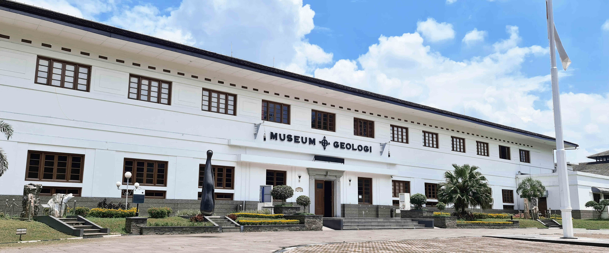

SEKILAS MUSEUM GEOLOGI INDONESIA

Sejarah Museum Geologi
Gedung Museum Geologi dibangun pada 1928 dan diresmikan dengan nama "Geologische Museum" pada 16 Mei 1929 bertepatan dengan penyelenggaraan Kongres Ilmu Pengetahuan Pasifik yang ke IV. Pembangunan dikerjakan selama 11 bulan dengan 300 pekerja dan menghabiskan dana 400.000 Gulden dibangun dengan arsitektur bergaya Art Deco berdasarkan rancangan arsitektur karya seorang arsitek Belanda, Ir. H. Menalda van Schouwenburg.
Pada 1850 kegiatan survei dan penelitian geologi di Indonesia dilaksanakan oleh "Dienst van het Mijnwezen" lembaga Pemerintah Belanda. Kemudian pada 1922 berganti nama menjadi "Dienst van den Mijnbouw". penelitian geologi semakin meningkat sehingga contoh batuan, mineral, fosil semakin banyak, maka pada 1928 dibangun gedung yang diperuntukkan bagi Laboratorium dan Museum Geologi yang bertempat di Rembrandt Straat Bandung, atau saat ini Jl. Diponegoro, Bandung.
Setelah Indonesia merdeka pada 1945. Terjadi pengambilalihan kantor "Chishitsu Chosasho" dari penguasa Jepang, pengelolaan Museum Geologi beralih menjadi Pusat Djawatan Tambang dan Geologi (PDTG, 1945-1950), Djawatan Pertambangan Republik Indonesia (1950-1952), Djawatan Geologi (1952-1956), Pusat Djawatan Geologi (1956-1957).
Museum Geologi menjadi Unit Pelaksana Teknis (UPT) Museum Geologi di bawah Pusat Survei Geologi, Badan Geologi, Kementerian Energi dan Sumber Daya Mineral (KESDM). Pada 2013, berdasarkan Permen ESDM No. 12 Tahun 2013, Museum Geologi menjadi Unit Pelaksana Teknis (UPT) Museum Geologi, di bawah Badan Geologi, Kementerian Energi dan Sumber Daya Mineral (KESDM). Sejak 2017, Museum Geologi berada di bawah Sekretariat Badan Geologi, Badan Geologi, Kementerian Energi dan Sumber Daya Mineral (KESDM).
Koleksi Museum Geologi
BATUAN
Batu Koral
Terumbu karang dan batugamping yang terangkat menjadi daratan akan mengalami pelapukan dan erosi kikis yang disebut sebagai proses karstifikasi. Di bagian permukaan, proses tersebut menghasilkan berbagai bentukan yang disebut sebagai eksokars. Melalui rekahan yang ada, air melarutkan tubuh batuan tersebut menghasilkan berbagai bentuk rongga-rongga serta mengendapkan larutannya menghasilkan berbagai bentuk ornamen yang disebut sebagai endokars. Kawasan kars mempunyai karakteristik tersendiri, tergantung pada faktor-faktor yang mempengaruhi curah hujan dan iklim, jenis dam sifat batugamping, struktur geologi, lamanya waktu proses berlangsung, porositas batuan atau kemampuan batuan menerap air, kerapatan vegetasi penutup dan tebal tipisnya lapisan tanah. Di Indonesia banyak fenomena kars yang terbentuk akibat fakto-faktor tersebut. Beberapa contoh kawasan kars di Indonesia adalah kawasan Maros-Pangkep, Rajamandala, Gunung Sewu, Kars Gombong, dan lain-lain.
Batubara
Batubara berwarna coklat gelap hingga hitam, mengkilap, keras, kompak, dan terasa ringan dibandingkan batuan sedimen lainnya. Batubara terbagi menjadi beberapa jenis berdasarkan derajat pembentukan dan kandungan kalorinya, diawali dari gambut, lignit, bituminus, dan paling tinggi adalah antrasit. Kandungan karbon paling tinggi ada pada antrasit (93-98%). Batubara merupakan batuan sedimen organik yang terbentuk dari pengenda-pan material sisa-sisa tumbuhan yang telah mengalami tekanan dan pemanasan. Batuan ini biasanya terbentuk di lingkungan rawa dan danau. Batubara dimanfaatkan terutama sebagai sumber energi foil untuk pembangkit listrik tenaga uap (PLTU), industri baja, industri karet sintetis, pewarnaan, serta berbagai pemanfaatan lainnya.
Ametis
 Ametis merupakan salah satu varian mineral kuarsa yang berwarna ungu. Komposisi mineral ini adalah Si02, memiliki tingkat kekerasan 7, sistem kristal heksagonal dan tidak memiliki belahan. Mineral ini bisa terbentuk dari kristalisasi magma di batuan beku plutonik dan hipabisal, batuan volkanik, serta dari pegmatit-pneumatolitik hingga larutan hidrotermal bertemperatur rendah dalam bentuk vein. Warna ungunya berasal unsur pengotor besi, dan akan berubah menjadi putih ketika dipanaskan pada 300 Celcius dan kuning pada 500 Celcius, dan akan kembali meniadi ungu ketika ditembak oleh sinar X atau dibombardir dengan partikel alfa. Karena bentuk dan warnanya yang indah, serta kekerasannya yang cukup tinggi, ametis sering dimanfaatkan sebagai batumulia.
Ametis merupakan salah satu varian mineral kuarsa yang berwarna ungu. Komposisi mineral ini adalah Si02, memiliki tingkat kekerasan 7, sistem kristal heksagonal dan tidak memiliki belahan. Mineral ini bisa terbentuk dari kristalisasi magma di batuan beku plutonik dan hipabisal, batuan volkanik, serta dari pegmatit-pneumatolitik hingga larutan hidrotermal bertemperatur rendah dalam bentuk vein. Warna ungunya berasal unsur pengotor besi, dan akan berubah menjadi putih ketika dipanaskan pada 300 Celcius dan kuning pada 500 Celcius, dan akan kembali meniadi ungu ketika ditembak oleh sinar X atau dibombardir dengan partikel alfa. Karena bentuk dan warnanya yang indah, serta kekerasannya yang cukup tinggi, ametis sering dimanfaatkan sebagai batumulia.
FOSIL VERTEBRATA
Tyrannosaurus rex
 Tyrannosaurus rex atau T-rex yang terdapat di ruang sejarah kehidupan, merupakan icon favorit pengunjung untuk berfoto. Dengan memiliki tinggi 6,5 meter, panjang 14 meter, dan berat mencapai 8 ton, yaitu dinosaurus pemakan daging terbesar da terbuas yang paling terkenal pada zamannya. Fosil yang menjadi salah satu koleksi unggulan ini adalah "replika" karena lokasi habibatnya tersebar di kawasan Amerika Utara dan sekitarnya, dan pada sat itu Indonesia belum terangkat meniadi sebuah daratan. T-rex ini berumur Kapur yang berkisar 145-65 juta tahun yang lalu. Enam puluh lima juta tahun yang lalu, masa-masa buruk telah menimpa hampir semua kawanan dinosaurus. Mereka telah punah, termasuk si T-Rex predator raksasa. Bukti fosil dari jenis yang kecil seperti Nyasasaurus yang hanya sebesar anjing dari Tanzania, hingga yang besar seperti Supersaurus dari Amerika, menunjukkan bahwa reptil raksasa ini adalah fauna penguasa bumi yang beragam dan tak akan habis misterinya untuk diungkap.
Tyrannosaurus rex atau T-rex yang terdapat di ruang sejarah kehidupan, merupakan icon favorit pengunjung untuk berfoto. Dengan memiliki tinggi 6,5 meter, panjang 14 meter, dan berat mencapai 8 ton, yaitu dinosaurus pemakan daging terbesar da terbuas yang paling terkenal pada zamannya. Fosil yang menjadi salah satu koleksi unggulan ini adalah "replika" karena lokasi habibatnya tersebar di kawasan Amerika Utara dan sekitarnya, dan pada sat itu Indonesia belum terangkat meniadi sebuah daratan. T-rex ini berumur Kapur yang berkisar 145-65 juta tahun yang lalu. Enam puluh lima juta tahun yang lalu, masa-masa buruk telah menimpa hampir semua kawanan dinosaurus. Mereka telah punah, termasuk si T-Rex predator raksasa. Bukti fosil dari jenis yang kecil seperti Nyasasaurus yang hanya sebesar anjing dari Tanzania, hingga yang besar seperti Supersaurus dari Amerika, menunjukkan bahwa reptil raksasa ini adalah fauna penguasa bumi yang beragam dan tak akan habis misterinya untuk diungkap.
Gajah Blora
Gajah blora merupakan temuan yang spektakuler, sekitar 85% foil dari satu individu gajah in secara utuh ditemukan oleh tim ahli dari museum geologi yang dipimpin oleh Iwan Kurniawan dengan anggota Fachroel Aziz, Sidarto, Erick Setyabudi, dan Dadang, dalam suatu survei di tepian Bengawan Solo purba, Dusun Sunggun, Desa Mendalem, Kecamatan Kradenan, Kabupaten Blora, Provinsi Jawa Tengah pada tahun 2009. Ekskavasi dilakukan pada November 2009 oleh tim yang bekerja sama dengan tim dari Dinas Pariwisata Kabupaten Blora dan Wollongong University (Gert Van den Bergh dan Mike Morwood). Proses ekskavasi, preparasi, rekonstruksi, hingga peragaan fosil tersebut memakan waktu sekitar empat tahun. Gajan yang berjenis kelamin jantan dan memiliki tinggi sekitar empat meter, panjangnya lima meter, dan berat 6-8 ton ini hidup sekitar 165.000 tahun yang lalu, dan mati pada umur 49 tahun. Nama ilmiahnya adalah Elephas hysudrindicus, dan dianggap sebagai leluhur gajah Asia.
Celebochoerus Heekereni
GKumpulan fosil babi ini dikirim ke Museum Sejarah Alam, Leiden. Berdasarkan potongan taring atas (upper canine), maka diketahui bahwa hewan ini dinamakan sebagai Celebochoerus heekereni yang merupakan sejenis babi besar atau giant pig. Celebochoerus heekereni merupakan fosil fauna paling dominan (mencapai lebih dari 85% dari total fosil fauna yang dikumpulkan)yang ditemukan di Lembah Wallanae, meliputi hampir seluruh elemen tulang-belulang yang terdiri dari tengkorak, berbagai elemen gigi-geligi (dentation elements) dan kerangka lainnya. Hal ini sangat memungkinkan untuk merekontruksi kerangka lengkapnya. Tengkorak Celebochoerus heekereni sangat berbeda dengan tengkorak famili babi (suidae) pada umumnya, yang menunjukan moncong lebih pendek dan cranial yang lebih tegak serta lobang tabung taring atas (alviolus tube of upper canine) besar dan menonjol. Celebochoerus hekeereni memiliki 2 buah gigi seri (I 1 – I 2) dimana ( I 1) lebih kecil dari (I 2). Mahkota (crown) rendah (less hypsodonty) dan menunjukan bentuk pola indistinct cutting edge sangat berbeda dengan umumnya keluaga babi (suidae) yang berpola jelas untuk memotong (a distinct cutting blade).
FOSIL INVERTEBRATA
Kerang raksasa
Tridacna gigas Linnaeus merupakan fosil yang hidup diantara terumbu karang pada lingkungan laut dangkal (neritik), dimana sinar matahari masih bisa masuk sampai dasar laut. Diperkirakan fosil ini berumur Oligosen akhir - Miosen awal pada formasi Rajamandala di Padalarang.
Kontak Hubung